In 1972 the United Nations held its first environment conference in Stockholm. Sweden’s own case study argued something new: sulfur emitted in other countries was acidifying Swedish lakes. The argument linked air chemistry, soils and water in one chain, and it led to the first international treaty on cross-border air pollution, in 1979.
Today we build that kind of argument ourselves, with every unit of the course:
one budget in equivalents from air to lake;
annual export is not a closed-water pH;
a sediment redox hypothesis tested against evidence;
an explanation is only as good as the test that could break it.
Delegates to the UN Conference on the Human Environment cycle through Stockholm, 1972. Photo: Pressens Bild, public domain, Wikimedia Commons.
One catchment, the whole course
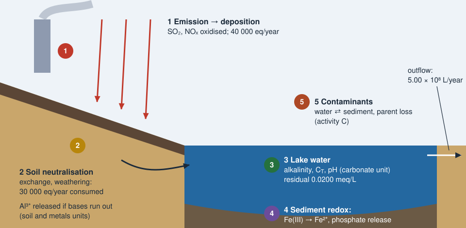
Every unit appears here: deposition brings acid, soils neutralise most of it, carbonate chemistry sets the lake’s alkalinity and pH, metals follow pH, redox controls the sediment, and contaminants partition between water and sediment.
Thread 1: from smokestack to acid input
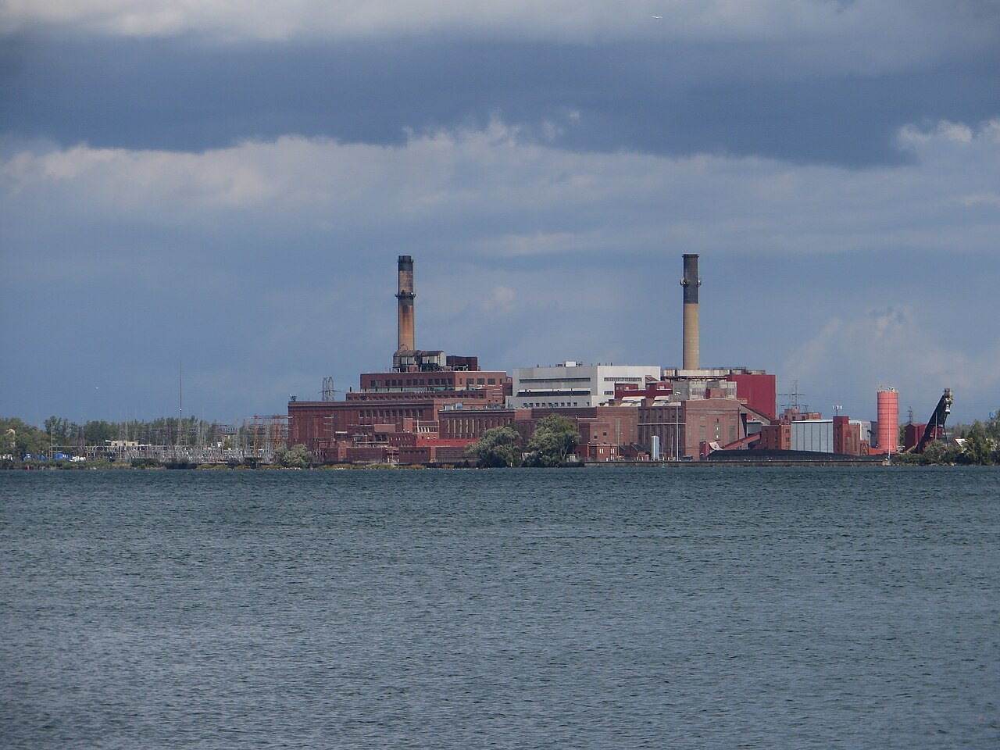
A coal-fired power station (Huntley Station, New York). Photo: Ken Lund, CC BY-SA 2.0, Wikimedia Commons.
SO₂ and NOx are oxidised in air to sulfuric and nitric acid, then deposited wet or dry.
Deposition unit, worked example:
HNO₃: 0.0200 mol m⁻² yr⁻¹ × 1 eq/mol
H₂SO₄: 0.0100 mol m⁻² yr⁻¹ × 2 eq/mol
total: 0.0400 eq m⁻² yr⁻¹
Over 1.00 × 10⁶ m²: 40 000 eq/year of acid.
Counting in equivalents lets us add acids of different charge.
Close the annual budget
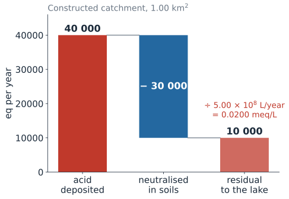
\text{residual}=\text{input}-\text{neutralised}
40 000 − 30 000 = 10 000 eq/year
Convert to a flow-weighted concentration with the annual water export:
Work in annual amounts first, then divide by water.
Thread 2: where the 30 000 eq went
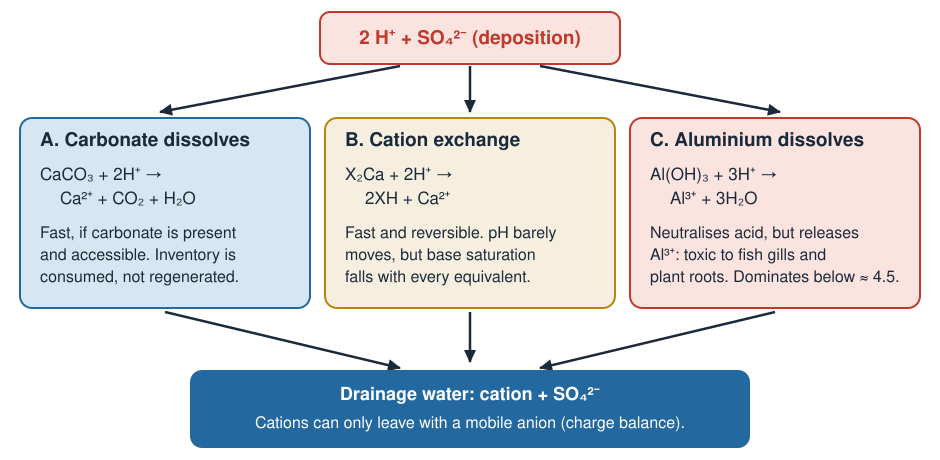
The soil lecture’s three pathways: carbonate dissolution, cation exchange, and aluminium release. Exchange and weathering supply base cations, which leave with sulfate. Each pathway draws on a finite inventory.
An annual budget is not a pulse
The carbonate lecture added a single acid dose to a closed beaker: alkalinity fell by the dose, CT stayed fixed, and a pH followed.
The catchment budget is different:
it is a flux over a year, spread over 5.00 × 10⁸ L of water;
the water exchanges CO₂ with air and soil;
the lake is continuously flushed and replaced.
0.0200 meq/L is a flow-weighted annual average, not the result of pouring acid into a lake.
Same units, different meanings
eq/year: an amount per time (budget)
meq/L: a concentration (after dividing by water)
pH: a present state (needs CT and CO₂)
Before combining two numbers, check that they refer to the same boundary and time.
Thread 3: alkalinity needs a reference
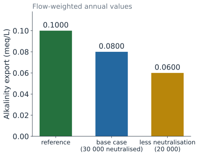
“Lower alkalinity” only means something compared with a reference.
Suppose that without the added acid, the catchment would export 50 000 eq/year of alkalinity: 0.100 meq/L.
The residual acid consumes alkalinity one-for-one:
50 000 − 10 000 = 40 000 eq/year = 0.0800 meq/L
As in the carbonate lecture, strong acid lowers alkalinity by exactly its amount in equivalents.
Alkalinity alone does not give a pH
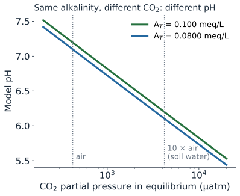
Model: carbonate system in equilibrium with a given CO₂ pressure, 25 °C, constants from the carbonate reference sheet.
With AT = 0.0800 meq/L:
in equilibrium with air: pH ≈ 7.1
with 10 × air CO₂, typical of soil water and groundwater: pH ≈ 6.1
Same alkalinity, one pH unit apart. To get a pH you need ATand CT or the CO₂ pressure.
Which term controls the budget?
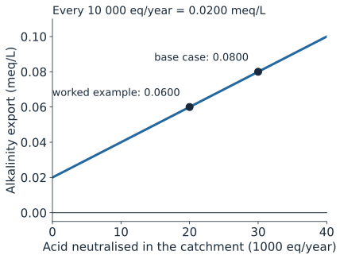
Worked example: suppose soils neutralise only 20 000 eq/year.
Each 10 000 eq/year less neutralisation lowers alkalinity export by 0.0200 meq/L.
This is a sensitivity test: it shows which term matters, not which process actually changed.
Amount or dilution?
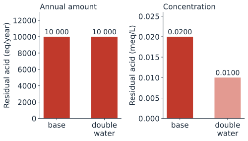
Exercise 2: double the water export to 1.00 × 10⁹ L/year, holding the acid amounts fixed.
residual amount: still 10 000 eq/year
residual concentration: 0.0100 meq/L
The concentration halved, but nothing chemical changed. That is dilution.
In a real catchment, more water also changes contact time, flow paths and weathering, so “everything else fixed” is an assumption.
Thread 4: when the balance tips, aluminium moves
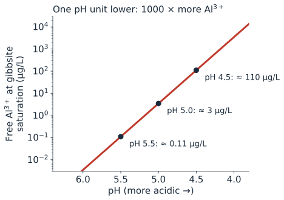
If acid input outruns neutralisation for long enough, alkalinity approaches zero and pH falls below about 5.5.
Then the soil’s aluminium buffer takes over, and Al³⁺ leaves with the drainage water. Free Al³⁺ rises about 1000-fold per pH unit.
The metals unit adds the next step: in brown, humus-rich water, organic ligands bind much of the aluminium, so the free ion, which harms fish gills, is lower than the total suggests.
Check yourself
Acid input 40 000 eq/year, neutralisation 35 000 eq/year, water 5.00 × 10⁸ L/year. Residual acid in meq/L?
With reference alkalinity 50 000 eq/year, what alkalinity export (meq/L) follows from question 1?
A lake’s alkalinity export halves between a dry and a wet year, with the same deposition. Name two explanations and a measurement to tell them apart.
Can you state the lake’s pH from your answer to question 2? What else would you need?
Thread 5: a separate set of observations
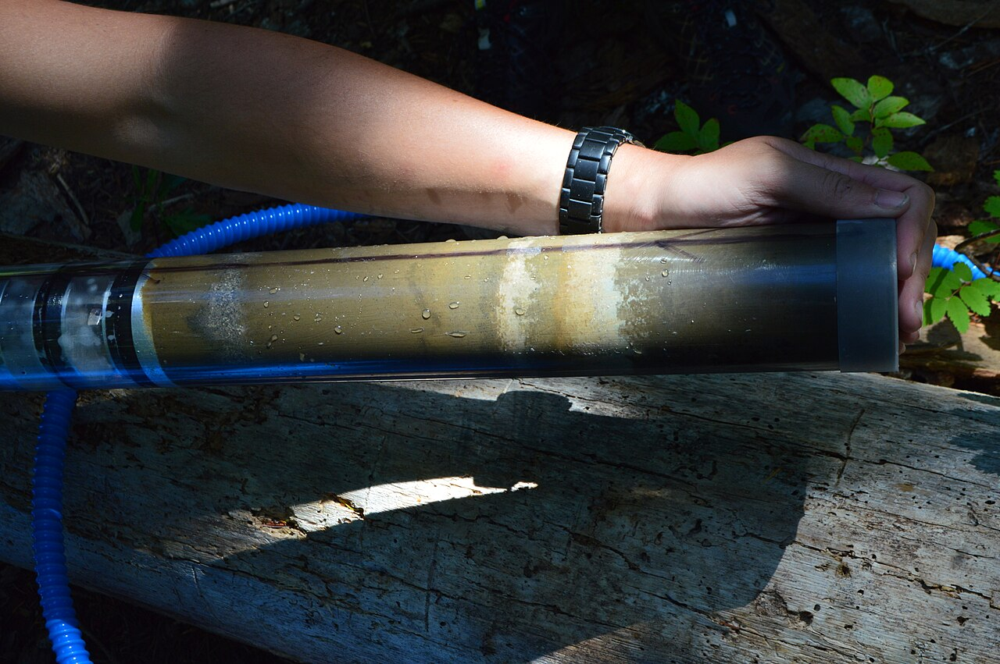
A lake sediment core, Forlorn Lakes, Washington, USA. Photo: Molly McKnight, US Forest Service, public domain, Wikimedia Commons.
Now a different question in the same lake. Water just above the sediment is sampled before and during a period of oxygen depletion (constructed observations):
Indicator
Before
During
O₂ (mg/L)
8.0
0.20
filtered Fe (mg/L)
0.020
1.00
filtered PO₄-P (mg P/L)
0.010
0.200
These are observations, not model outputs. What chemistry could explain them?
What changed, and by how much
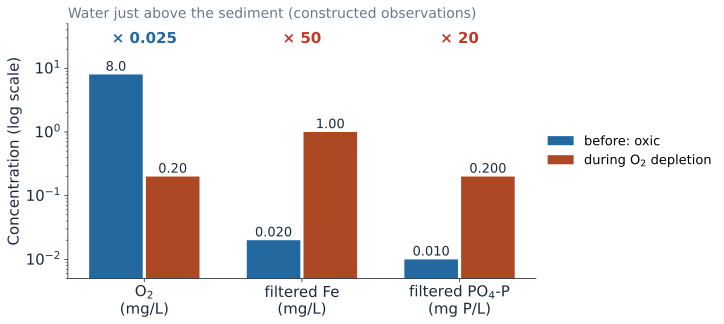
Oxygen fell 40-fold while filtered iron rose 50-fold and phosphate-P 20-fold. All three changed together, in the same water, at the same time. That pattern is what a hypothesis has to explain.
A mechanism: iron reduction releases phosphate
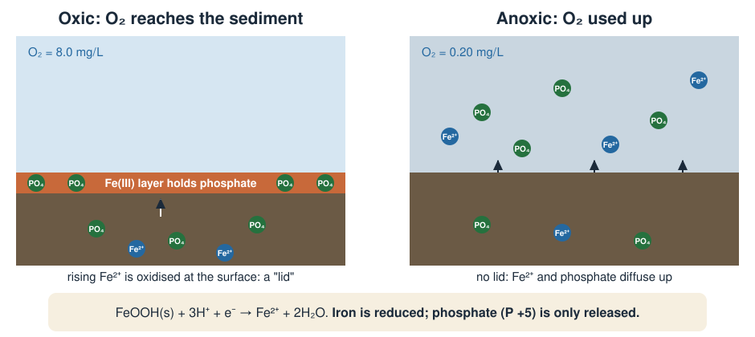
Under oxic conditions, an Fe(III) oxyhydroxide layer at the sediment surface holds phosphate. When O₂ runs out, Fe(III) is reduced and dissolves, and the phosphate it held is released. Phosphorus itself does not change oxidation state.
The same chemistry, on a sea-wide scale
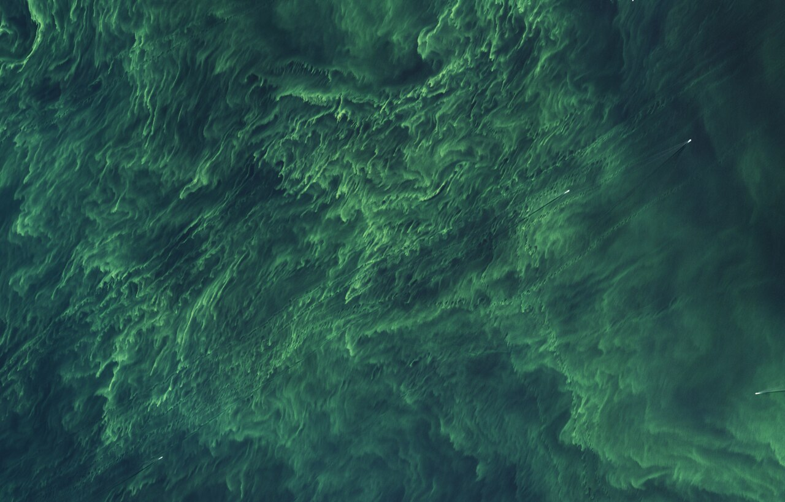
Cyanobacteria bloom in the Baltic Sea, July 2025, Landsat. Image: NASA Earth Observatory, public domain, Wikimedia Commons.
The deep Baltic Sea has large areas of oxygen-free bottom water.
There, iron-bound phosphate is released from sediments, as in our lake. This internal loading adds to the phosphorus from rivers and helps sustain summer cyanobacteria blooms like this one.
Cutting nutrient inputs from land is necessary, but the sediments keep releasing phosphate for years. Recovery is slow for the same reason as at Hubbard Brook: a stored inventory.
Consistent is not proven
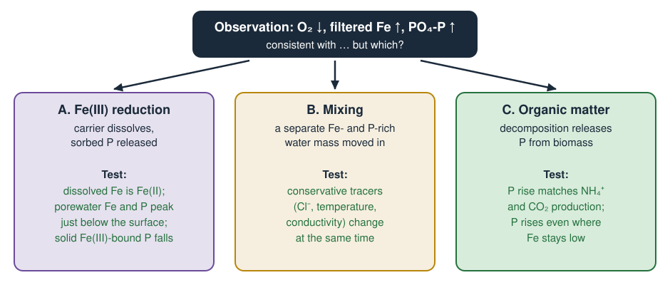
Our data are consistent with iron reduction, but they do not identify it uniquely. Each alternative predicts something different. A good explanation names the measurement that would tell them apart.
Keep forms and units aligned
Phosphate-P is reported as mass of phosphorus. 0.200 mg P/L = 6.46 µmol/L = 0.613 mg PO₄³⁻/L. Mixing the two bases gives a factor-3 error.
Filtered Fe is an operational fraction. It can include Fe(III) colloids and organic complexes, not just Fe²⁺.
eq/year (budget), meq/L (concentration) and pH (state) are three different kinds of quantity.
Before you combine two numbers, check they refer to the same water, time and fraction.
Quick conversion check
1.00 mg/L Fe ÷ 55.85 g/mol = 17.9 µmol/L
0.200 mg P/L ÷ 30.97 g/mol = 6.46 µmol/L
Molar ratio Fe : P released ≈ 18 : 6.5, about 3 : 1. Does that fit the Fe : P ratio of the sediment’s iron oxides? Only a solid-phase measurement can say.
Thread 6: the contaminant in the same lake
Activity C’s compound U behaves like this in a closed water–sediment system: half sorbed (Kd = 100 L/kg), half-life 10 days.
In the real lake, this is a separate argument with its own boundary:
outflow and inflow would add terms;
if sorbed U is buried, it leaves the active system without being destroyed;
anoxic sediment may change both Kd and the rate.
Keep the compound model and the budget in separate sections of your report.
Anatomy of a chemical explanation
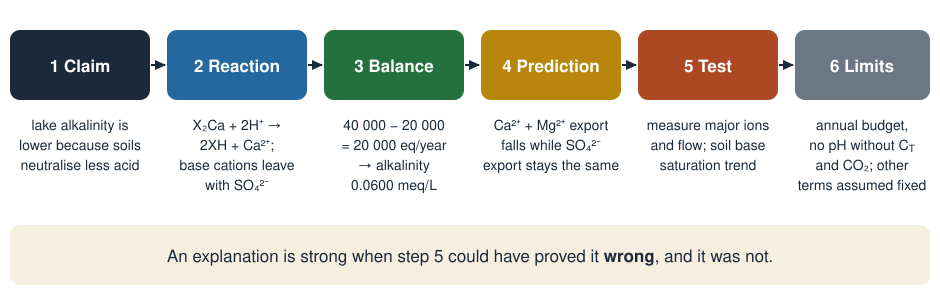
Every strong argument in this course had these six parts. The test is what makes it science: a measurement that could have proved the claim wrong. The limits say what the numbers do not show.
Back to Sweden: what happened next
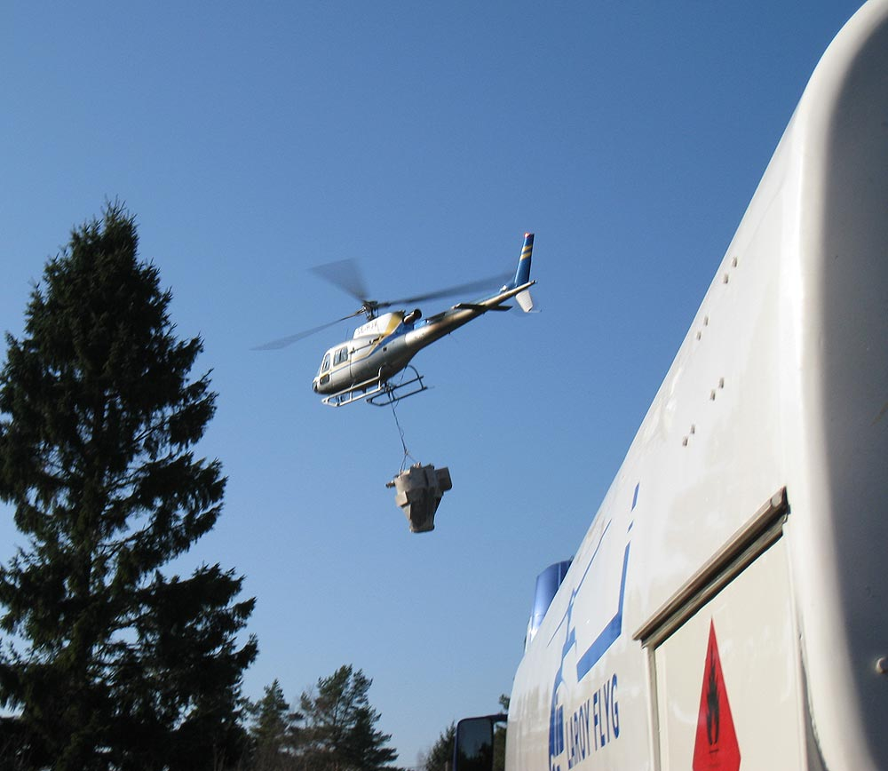
Liming by helicopter, Kungsbacka, Sweden. Photo: Bulver, CC BY-SA 3.0, Wikimedia Commons.
The 1972 argument was eventually accepted. International agreements cut sulfur emissions across Europe, and sulfur deposition over Sweden has fallen to a small fraction of its 1980s peak.
Many lakes are recovering, but slowly:
soils must rebuild exchangeable base cations by weathering;
forestry removes base cations in harvested wood;
thousands of lakes are still limed to bridge the gap.
The chemistry of every unit was needed to understand both the damage and the slow recovery.
Preparing for the exam
For any synthesis question, work through the same steps:
Draw the boundary. Which water, solid or air volume, and over what time?
List the quantities and their kind: amount, flux, concentration, state.
Write the reactions and check element and charge balance.
Close the budget in amounts or equivalents before converting.
Separate model predictions, constructed data and real observations.
Name an alternative explanation and the measurement that would distinguish it.
State the limits: what your numbers cannot tell you.